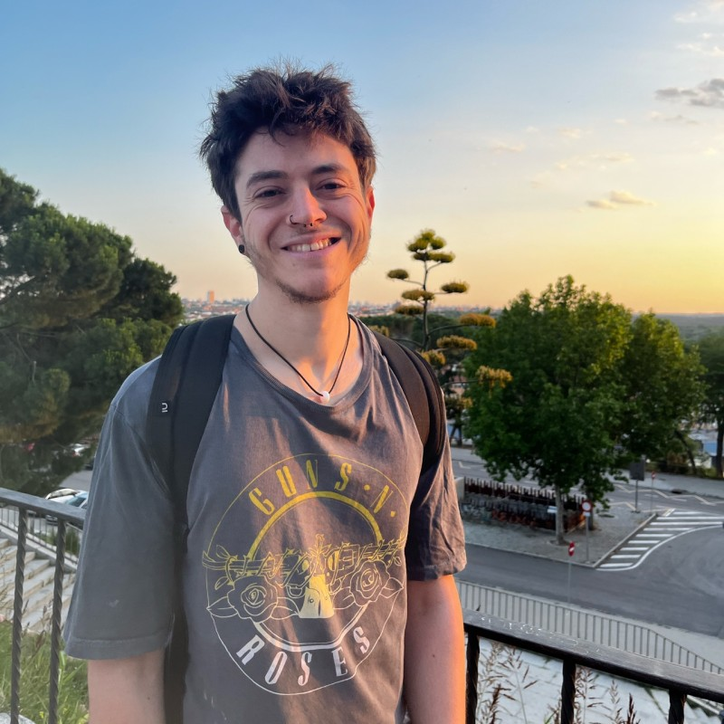
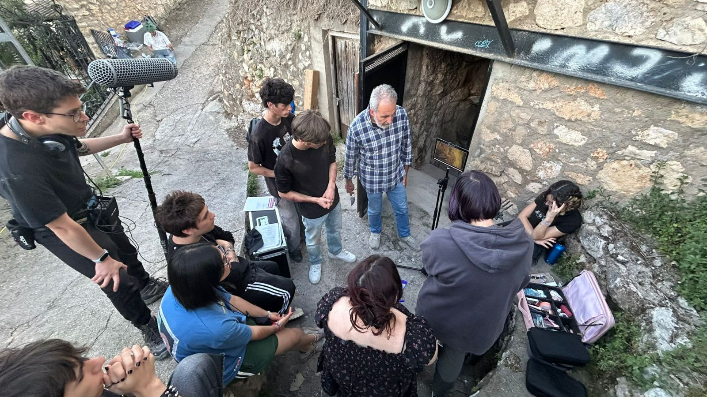
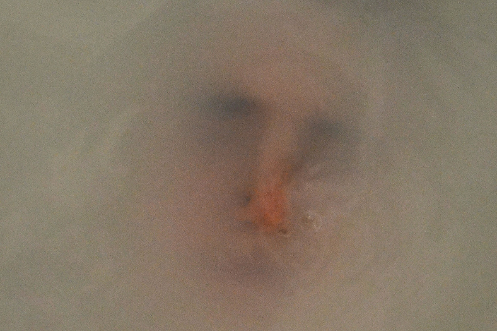
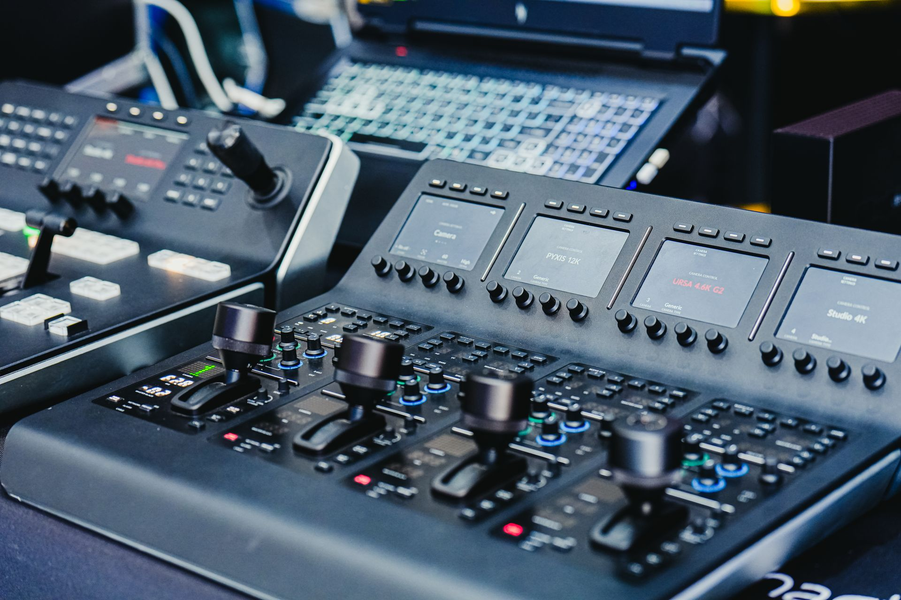

Grado en Comunicación Audiovisual
Universidad de Alcalá
2023 - 2027
He estudiado el grado en Comuniación Audiovisual durante los años 2023 y 2027.
Estudiante de Comunicación Audiovisual
Si puedes hacer las cosas bien y con pasión, no las hagas de otra forma.
Ver mis proyectos
Soy Agustín Olivera, un estudiante de Comunicación audiovisual en el 4º año de la carrera. Estoy ilusionado por empezar a trabajar en el trabajo de fin de Grado y por comenzar con las prácticas laborales, para poder así tocar aunque sea por encima cómo funciona el mundo del audiovisual desde dentro.
Me considero una persona comprometida y responsable, con ganas e ilusión por aprender constantemente y continuamente. Creo ser alguien con quien es fácil de trabajar y me gusta escuchar y respetar las propuestas de otras personas.
Universidad de Alcalá
2023 - 2027
He estudiado el grado en Comuniación Audiovisual durante los años 2023 y 2027.
Grado medio de formación profesional
2020 - 2021
He trabajado como auxiliar de enfermería para múltiples hospitales públicos de la Comunidad de Madrid como son el Hospital Gregorio Marañón, Hospital Santa Cristina u Hospital 12 de Octubre, entre otros.
2021 - 2025
Mis responsabilidades en este puesto fueron las de cuidades auxiliares a los pacientes ingresados en diferentes ubicaciones del hospital, como por ejemplo la UCI, Medicina Interna, Cuidados Paliativos, entre otros.
Ilunion/Acciona
2025 - 2026
También he trabajado como celador sanitario transportando y llevando a los diferentes pacientes de una parte a otra del hospital.
Consulta algunos de los proyectos y experiencias desarrollados durante mi formación.
| Año | Proyecto | Rol | Herramientas |
|---|---|---|---|
| 2026 | Cortometraje universitario: "Mala Hierba" para Cine Alcarria. | Jefe de Sonido | DaVinci Resolve |
| 2026 | Participación en exposición fotográfica "Brotes 2026" con fotografía "Ecos de un instante infinito" | Participante | Darkroom photo editor |
| 2025 | Proyecto fotográfico | Fotografía | Photoshop |
| 2024 | Modelado 3D | Artista 3D | Blender |

Corto audiovisual "Mala Hierba"
Año: 2026
Trabajé en este proyecto como jefe de sonido y fui el encargado de la captación del sonido en directo con pértiga y micrófonos, así como de asegurarme que la calidad del mismo fuera correcta.
Ver proyecto
Participación en exposición fotográfica "Brotes 2026" con fotografía "Ecos de un instante iinfinito".
Año: 2026
Fui participante en la exposición fotográfica Brotes 2026 llevada a cabo por la UAH con mi fotografía "Ecos de un instante infinito".
Ver proyecto
Trabajo individual para clase
Año: 2026
Este trabajo consistió en la preparación de un trabajo individal para una asignatura de la carrera.
Ver proyectoEmail: agustin.olivera@edu.uah.es
Instagram: @aguthelasoli98
LinkedIn: Mi perfil